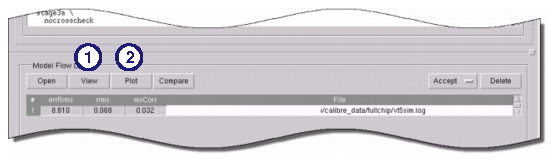
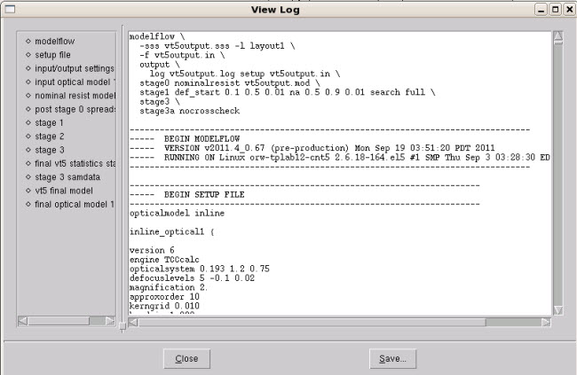
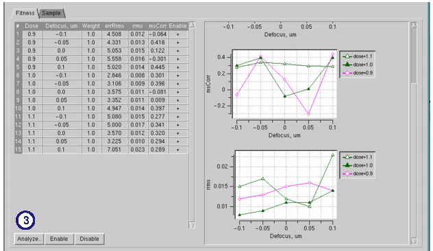
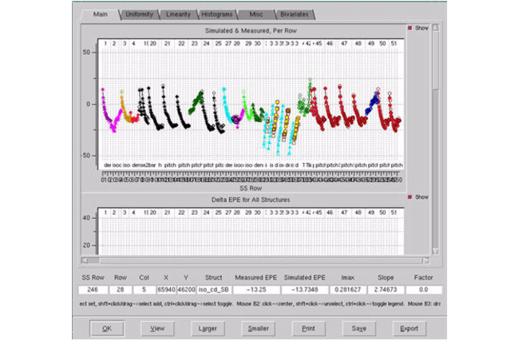
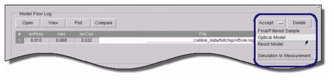

This procedure
describes what can be done with the results of a successful VT5
Center run or modelflow (Version 1) log file.
Prerequisites
Any one of the following:
Procedure
- In VT5 Center, select the
result row, then click View as shown in Figure 1 to view the modelflow
log file.
Figure 1. View, Plot, and Compare
Buttons in VT5 Center
This log file can be browsed
with the navigation links on the left side of the View Log dialog
box (Figure 2).
Figure 2. View Log Dialog Box
(VT5 Center)
- In VT5 Center, click the Plot button
as shown in Figure 1 to bring up the SSS Process Window Analysis
window.
Figure 3. SSS Process Window
Analysis Tool, Fitness Tab
- Select one of the dose and
defocus process conditions and click the Analyze button
at the bottom left corner of the window. If there is only one sample
data spreadsheet file in the log, only one row will appear in the selection
list.
Figure 4. VT5 Center GUI (Analyze
Dialog Box)
- Use the various tabs and scroll
bars to inspect the fitness of your data.
- If you are not satisfied with
the data fit, use any of the following methods to improve the results:
Reduce
data outliers by disabling test structures in the Sample, in tab in VT5 Center.
Tune the optical model
further by changing the parameters to optimize in the Optics,
1 tab and switching the Optics mode to (O)ptimize.
Tune the resist model
further by either setting a different Modelform in the VT5,
in tab or changing the optimization parameters on the VT5,
3 tab and switching the VT5 mode to (O)ptimize.
Click the Run button
to re-run VT5 Center.
- Once you are satisfied with
the data, click the best Model Flow log line to select it, and then
use the following options to save the optimized files using the Accept
dropdown menu as shown in Figure 5:
Figure 5. Accept Menu in VT5 Center
Final sample structures — Select Accept:
Final / Filtered Sample, then choose for
sample data files, or for super sample data files.
Optical model —
Select Accept: Optical Model, then choose , Save
2nd Model, or Save 3d Model as
appropriate.
Resist model —
Select Accept: Resist Model, then choose VT5 > Save As.
Copy the simulation results to the measurement column —
You must first select Accept: Final / Filtered Sample,
then select Accept: Simulation to Measurement.
If you do not first accept the final sample, Calibre WORKbench will
not process the request properly.
These model files can now be
used to run OPC simulations.